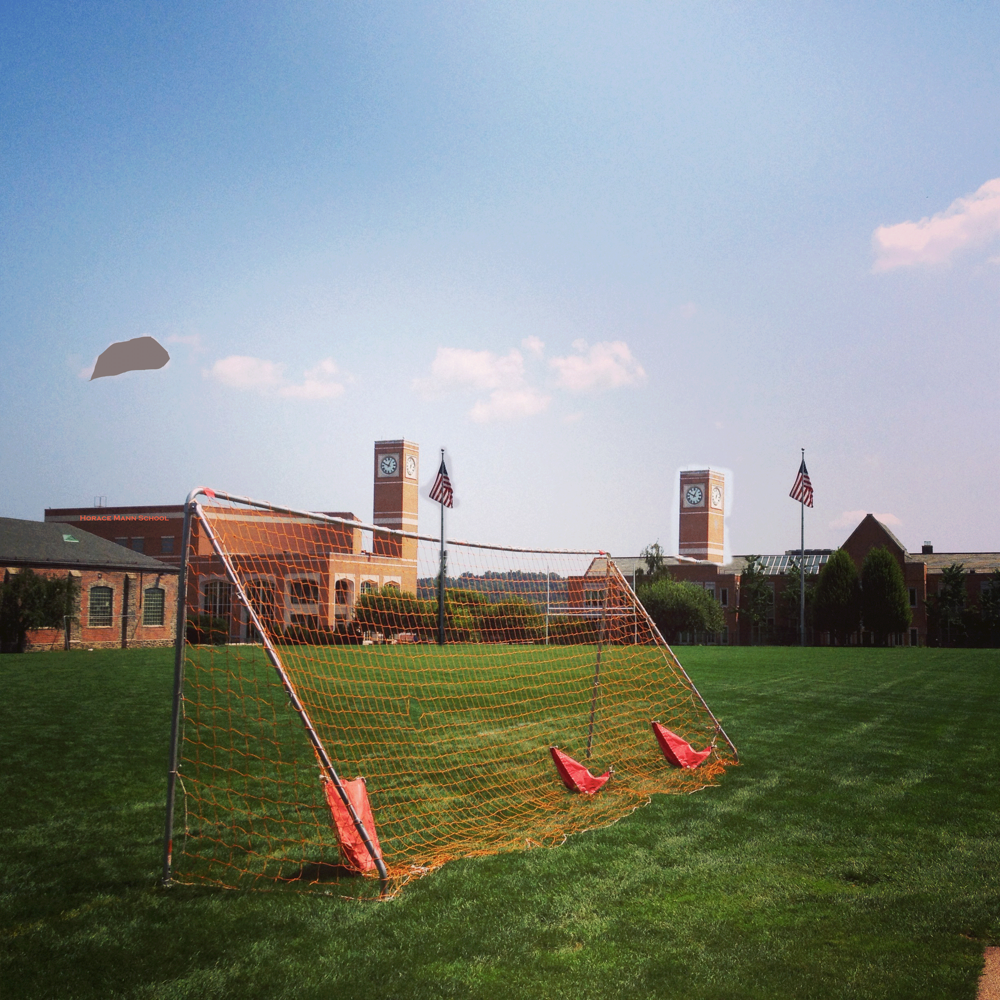

After Photoshop
After Image:

The Changes Made:
Although they might be small, you will find that several aspects of this photo differ from the original one. One of the clouds in the sky, rather conspicuously, has turned a dark shade of grey (it's a rain cloud now!). As well, there are now three orange sandbags in the back of the soccer goal - the middle one is a clone of the bag on the right. Off in the distance, you might notice that there are now two clock towers, completely in sync with each other. Finally, I have cloned the American flag pole and, if you look very closely, the side of Fisher Hall now has a sign reading Horace Mann School on it.
Photoshop Algorithm:
- Take a photo from my phone and upload its jpg to photoshop.
- Add a text box that reads "Horace Mann School", and place it on the side of Fisher Hall.
- Use the eyedropper tool to select the red color of one of the sandbags in goal and apply it to the text box.
- Use the magnetic lasso tool to select the shape of the cloud on the far left.
- Use the paint bucket to change the color of the selected cloud to grey.
- Use the clone stamp to create a copy of the sandbag on the right and place it in the middle of the goal.
- Also use the clone stamp to copy the american flag pole and place it to the left of the original.
- Finally, use the clone stamp to duplicate the clock tower on top of Fisher Hall; place the copy on top of Phorzheimer Hall.
← Click Here to return to the original image